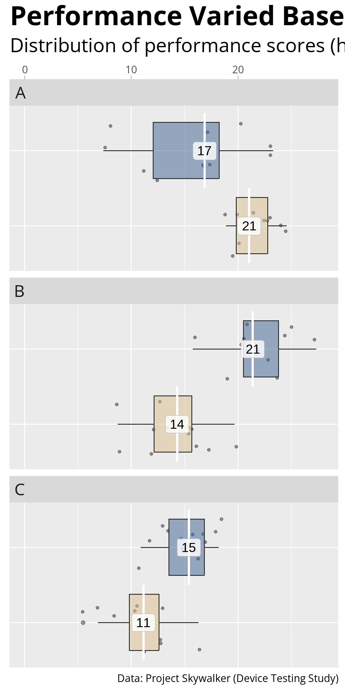
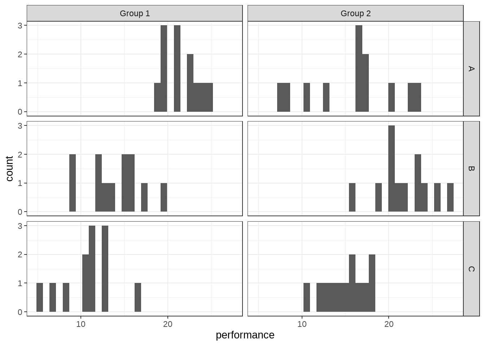

library(knitr)
knit_print.gt <- function(x, ...) {
stringr::str_c(
"<div style='all:initial';>\n",
gt::as_raw_html(x),
"\n</div>"
) |>
knitr::asis_output()
}
registerS3method(
"knit_print", 'gt_tbl', knit_print.gt,
envir = asNamespace("gt")
# important to overwrite {gt}s knit_print
)data <- create_data(mean = c(20, 18, 14, 23, 10, 14), sd = c(2, 4, 3, 3, 4, 3), seed = 42) |>
mutate(performance = case_when(performance < 0 ~ 5.5, TRUE ~ performance))
create_plot(data)
effect_of_order(data)[[1]]
effect w p.value
3 order 0.92 0.410
4 group:order 0.92 0.410
[[2]]
effect dfn dfd f p ges
2 group 1 22 9.048 0.006 0.048
3 order 2 44 0.037 0.964 0.001
4 group:order 2 44 0.061 0.941 0.002effect_of_group(data)[[1]]
effect w p
3 task 0.95 0.57
4 group:task 0.95 0.57
[[2]]
effect dfn dfd f p ges
2 group 1 22 9.048 0.006 0.112
3 task 2 44 21.092 <0.001 0.400
4 group:task 2 44 26.391 <0.001 0.454between_group_differences(data)# A tibble: 3 × 8
task contrast statistic t_df estimate lower_ci upper_ci p
<chr> <chr> <dbl> <dbl> <dbl> <dbl> <dbl> <chr>
1 A Group 2 - Group 1 -3.50 13.7 -5.60 -9.04 -2.16 0.004
2 B Group 2 - Group 1 6.17 21.9 7.98 5.30 10.7 <0.001
3 C Group 2 - Group 1 4.00 21.2 4.31 2.07 6.54 <0.001within_group_differences(data) contrast estimate SE df t.ratio p.value
1 A - B -5.980 1.534 33 -3.898 <0.001
2 A - C 0.845 1.534 33 0.551 0.585
3 B - C 6.826 1.534 33 4.449 <0.001data %>%
ggplot(aes(x=performance)) +
geom_histogram(bins = 30) +
facet_grid(task ~ group) +
theme_bw()
data %>%
group_by(task, group) %>%
summarise(mean = mean(performance),
sd = sd(performance),
median = median(performance),
min = min(performance),
max = max(performance)) %>%
mutate(across(where(is.numeric), round, 2)) %>%
gt() %>%
gt_tab() %>%
tab_options(table.width = px(800)) %>%
cols_width(
everything() ~ px(60)
)| group | mean | sd | median | min | max |
|---|---|---|---|---|---|
| A | |||||
| B | |||||
| C | |||||